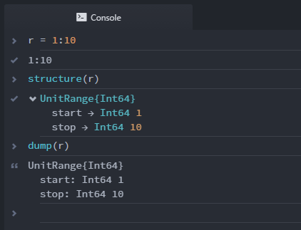

The Juno.jl Front-End
Juno provides some functionality using Atom's UI, which will usually have a fallback for use in other environments.
The isactive() function will provide an interface for figuring out whether the current session is running within Juno:
Juno.isactive — Function.isactive()Will return true when the current Julia process is connected to a running Juno frontend.
Enhanced Display
Juno.jl includes features which allow package developers to created enhanced displays in Juno.
For example, we can print info to the console in a nicer way:
info("foo")
Juno.info — Function.info(msg)Show the given message in Juno's console using blue styling, or fall back to Base.info.
In a package, you can use import Juno: info to replace the default version with this one.
or provide structured display for arbitrary objects (similar to Base.dump)

Juno.structure — Function.structure(x)Display x's underlying representation, rather than using its normal display method.
For example, structure(:(2x+1)) displays the Expr object with its head and args fields instead of printing the expression.
Profiler
Profiles collected by @profile can be displayed as a flame chart (similar to ProfileView.jl) inside of Juno by calling Juno.profiler(). Juno.profiletree() will display the stack trace similar to the output of Base's Profile.print(). There's also a @profiler macro which does the same as @profile but also displays the collected information as a flame chart and clears all collected backtraces beforehand.
Juno.profiler — Function.profiler()Show currently collected profile information as an in-editor flamechart.
Juno.profiletree — Function.profiletree()Show currently collected profile information in tree-form. Falls back to Profile.print().
Juno.@profiler — Macro.@profilerClear currently collected profile traces, profile the provided expression and show it via Juno.profiler().

Clicking on one of the boxes in the profile view will take you to the corresponding file/line. The length of the lines in the editor correspond to the percentage of calls made in that line; to clear the profile view and the in-editor display, click the Forget Plot button in the profile view toolbar.
Progress Meters
Juno.jl allows package developers to use the progress bar which is provided in the Atom window. For example, you can easily show a progress meter for a for loop via the command:
@progress for ...
The following functions provide this interface:
Juno.@progress — Macro.@progress [name] for i = ...Show a progress metre for the given loop if possible.
Juno.progress — Function.progress(p::ProgressBar, prog::Number)Update p's progress to prog.
progress(p::ProgressBar)Set p to an indeterminate progress bar.
progress(f::Function; name = "", msg = "")Evaluates f with p = ProgressBar(name = name, msg = msg) as the argument and calls done(p) afterwards. This is guaranteed to clean up the progress bar, even if f errors.
Juno.ProgressBar — Type.ProgressBar(;name = "", msg = "")Create a new progress bar and register it with Juno, if possible.
Take care to unregister the progress bar by calling done on it, or use the progress(f::Function) syntax, which will handle that automatically.
Juno.name — Function.name(p::ProgressBar, m)Update ps name.
Juno.msg — Function.msg(p::ProgressBar, m)Update the message that will be displayed in the frontend when hovering over the corrseponding progress bar.
Juno.right_text — Function.right_text(p::ProgressBar, m)Update the string that will be displayed to the right of the progress bar.
Defaults to the linearly extrpolated remaining time based upon the time difference between registering a progress bar and the latest update.
Base.done — Function.done(p::ProgressBar)Remove p from the frontend.
It is recommended to either use the @progress macro or the
progress(name = "Foo") do p
endnotation to ensure that the progress bars are properly unregistered in the frontend.
Interaction
Juno.jl lets package developers interact with users via the Atom frontend. For example, you can allow the user to select from a list of options:
Juno.selector — Function.selector([xs...]) -> xAllow the user to select one of the xs.
xs should be an iterator of strings. Currently there is no fallback in other environments.

or get input in the console:
Juno.input — Function.input(prompt = "") -> "..."Prompt the user to input some text, and return it. Optionally display a prompt.

Juno.notify — Function.notify(msg)Display msg as an OS specific notification.
Useful for signaling the end of a long running computation or similar. This disregards the Notifications setting in julia-client. Falls back to info(msg) in other environments.
As of version 0.5.11 of Atom.jl, Base.readline() will also correctly request user input from the console instead of stalling indefinitely.